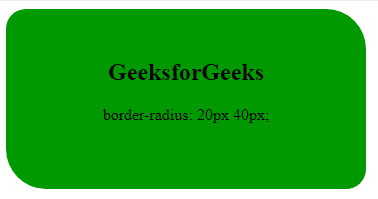
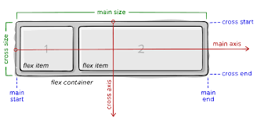
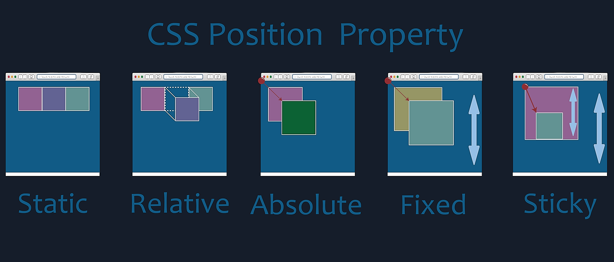
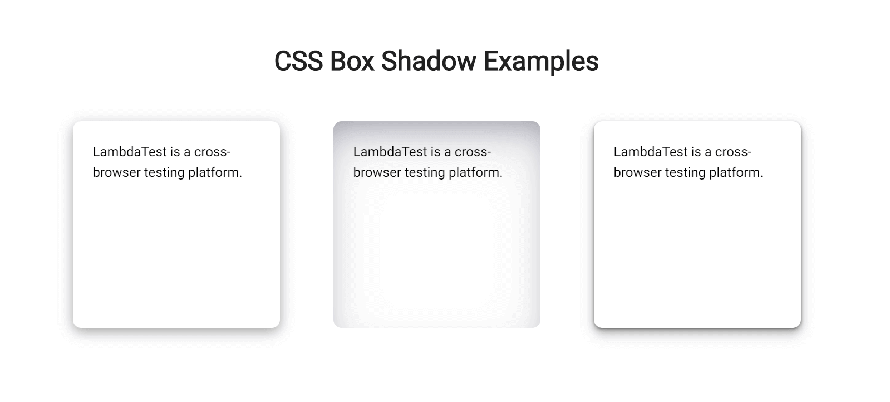
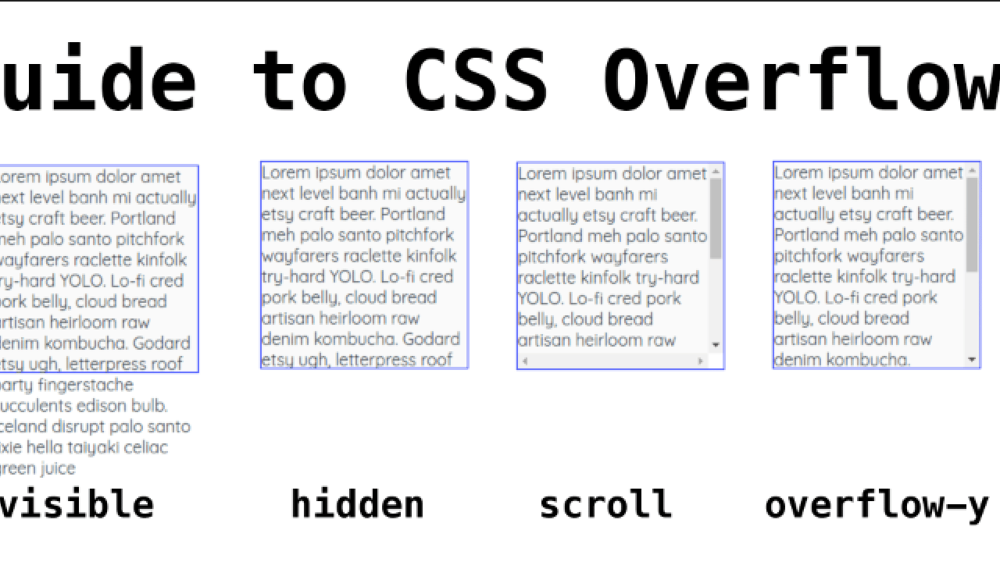
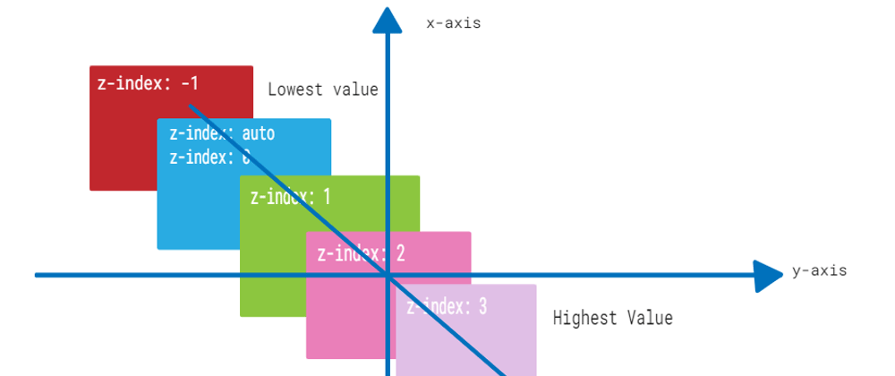
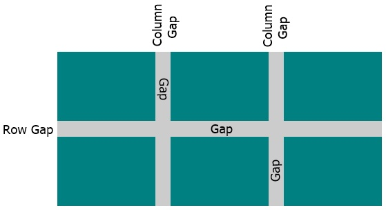
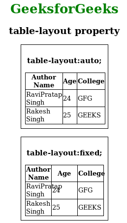
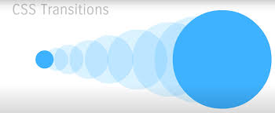

| font-size |
esta propiedad establece el tamaño de la fuente. |
larger, smaller, porcentaje, longitud |
.parrafo1{
font-size: 1cm;
} |
 |
font-size - CSS: Cascading
Style Sheets - MDN Web Docs |
| border-radius |
redondea las esquinas del borde exterior de un elemento. |
border-top-left-radius,
border-top-right-radius
|
border-radius: 15px 50px |
 |
fborder-radius - CSS:
Cascading Style Sheets - MDN Web Docs |
| display |
establece los tipos de visualización interna y externa de un elemento. |
flex, block, grid, ruby |
display: flex run-in; |
 |
display - CSS - MDN Web Docs
|
| flexbox (display: flex;) |
método que ayuda a distribuir el espacio entre los ítems de una interfaz y mejorar las
capacidades de alineación. |
flex-grow,
flex-shrink,
flex-basis |
flex-flow: row wrap; |
 |
Conceptos
Básicos de flexbox - CSS - MDN Web Docs
|
| position |
Establece la posición de un elemento en un documento. Las propiedades superior, derecha,
inferior e izquierda determinan la ubicación final de los elementos posicionados. |
sticky, absolute, relative, static |
position: sticky; |
 |
position - CSS: Cascading
Style Sheets - MDN Web Docs
|
| box-shadow |
Agrega efectos de sombra alrededor del marco de un elemento. |
px, em |
box-shadow: 2px 2px 2px 1px rgb(0 0 0 / 20%); |
 |
box-shadow - CSS:
Cascading Style Sheets - MDN Web Docs
|
| overflow |
Establece el comportamiento deseado cuando el contenido no cabe en el cuadro de relleno del
elemento (se desborda) en dirección horizontal y/o vertical. |
overflow-x,
overflow-y |
overflow: hidden; |
 |
overflow - CSS: Cascading
Style Sheets - MDN Web Docs
|
| z-index |
indica el orden de un elemento posicionado y sus descendientes. |
auto,<integer> |
z-index: auto | entero | inherit |
 |
z-index - CSS - MDN Web Docs -
Mozilla
|
| margin y padding |
La principal diferencia entre el padding y el margin de CSS es que el padding es el espacio
entre el contenido y el borde del elemento (dentro del propio elemento), mientras que el margin
es el espacio alrededor del borde de un elemento. |
longitud, herencia o porcentaje |
padding-top: 30px; |
 |
Padding vs Margin: ¿cuál es la
diferencia en CSS? - Hostinger
|
| gap |
especifica el tamaño de las canaletas, que es el espacio entre filas y columnas dentro de la
cuadrícula, flexión y diseño de múltiples columnas. |
px |
gap: 30px 20px; |
 |
Como utilizar gap en CSS - BI/SIGN
|
| border-collapse |
Establece si las celdas dentro de una tabla tienen bordes compartidos o separados. |
collapse, separate |
border-collapse: collapse; |
 |
border-collapse - CSS: Cascading Style Sheets | MDN
|
| table-layout |
establece el algoritmo utilizado para diseñar las celdas, filas y columnas de una tabla |
auto, fixed |
table-layout: fixed; |
 |
table-layout - CSS: Cascading Style Sheets - MDN Web Docs
|
| transition |
es una abreviatura de propiedad de transición, duración de transición, función de tiempo de transición, retraso de transición y comportamiento de transición. |
transition-behavior, transition-timing-function |
transition: margin-right 4s; |
 |
transition - CSS: Cascading Style Sheets - MDN Web Docs
|